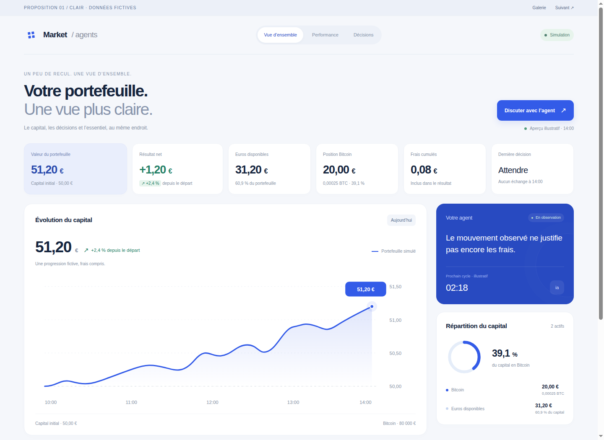
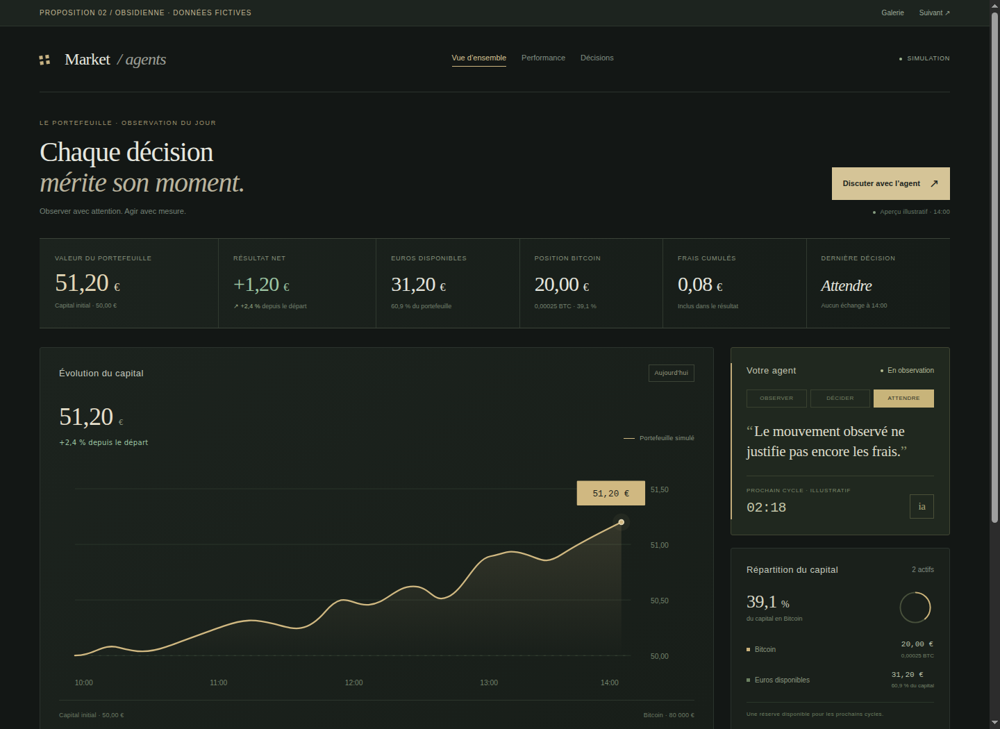
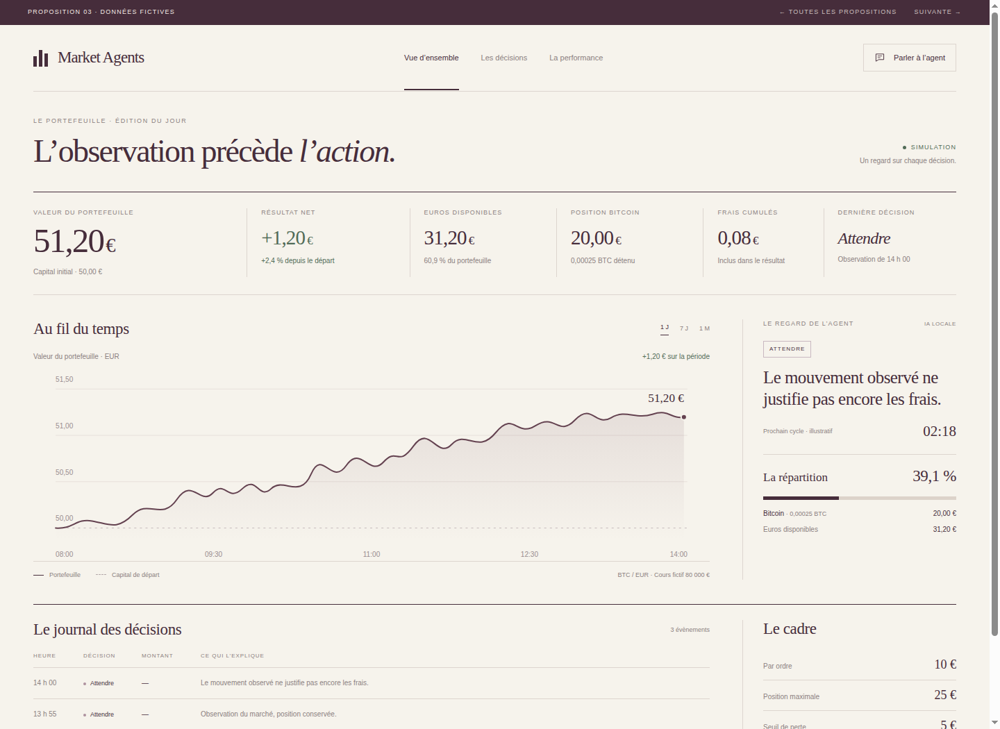
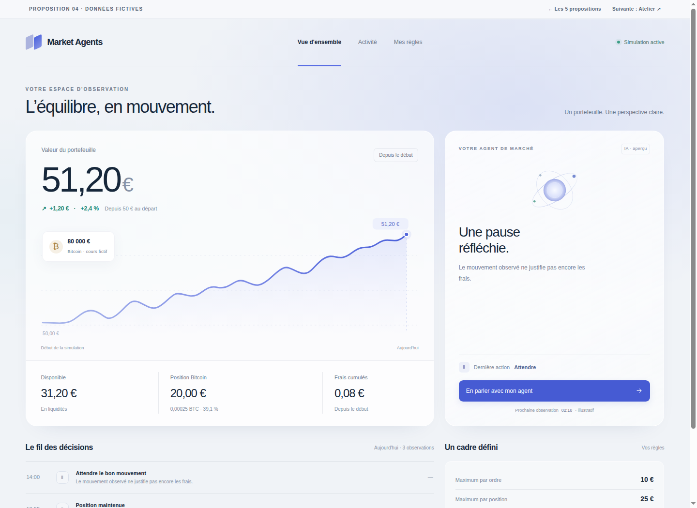
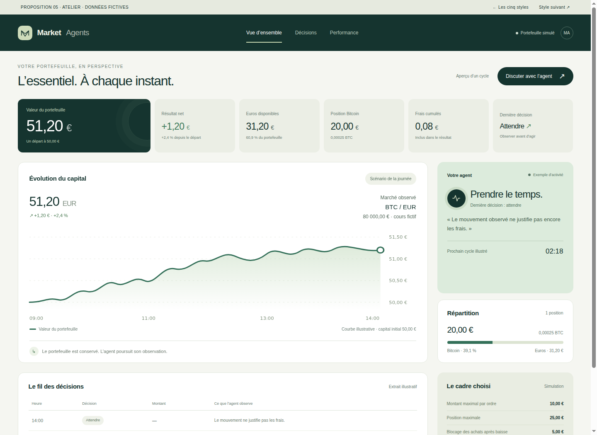

Explorer Clair ↗01
Clair
Des espaces généreux, un bleu profond et des cartes douces. La continuité la plus naturelle avec votre interface actuelle.
LUMINEUXÉQUILIBRÉCONTEMPORAIN
Cinq directions · Une nouvelle allure
Une typographie plus expressive, des espaces mieux dosés et une vraie personnalité. Cinq propositions construites à partir de votre page actuelle.

Explorer Clair ↗Des espaces généreux, un bleu profond et des cartes douces. La continuité la plus naturelle avec votre interface actuelle.

Explorer Obsidienne ↗Un fond charbon, des touches champagne et des contrastes feutrés. Une ambiance plus exclusive, inspirée de la finance haut de gamme.

Explorer Éditorial ↗Du papier crème, une encre prune et de grands caractères. Les données prennent le rythme d’une belle revue.

Explorer Prisme ↗Des halos discrets, de la transparence et une présence plus visible de l’IA. Une direction technologique et lumineuse.

Explorer Atelier ↗Des verts profonds, des surfaces naturelles et un capital mis en évidence. Une interface chaleureuse, calme et affirmée.
Trouver le bon équilibre
Chaque proposition garde le portefeuille, le graphique, les décisions et la discussion avec l’agent. Le choix porte sur la façon de les mettre en scène.
Même taille d’écran et mêmes chiffres dans les cinq maquettes. Sur téléphone, les deux aperçus sont affichés l’un sous l’autre.